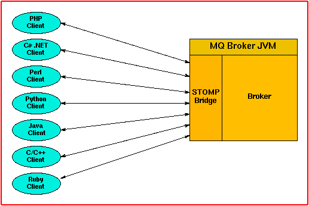

New Work Analysis
-
Copyright 2009, Sun Microsystems, Inc. All rights reserved. Features and specifications subject to change without notice.
- Synopsis:
-
STOMP Protocol Support
- Quick Questions:
-
- Description:
-
STOMP protocol (from http://stomp.codehaus.org/) is a streaming text orientated
messaging protocol. The protocol provides an interoperable wire format so that
any STOMP client can communicate with any broker that supports the STOMP protocol.
Because the simplicity of the protocol, it is easy to write a STOMP client using
available languages for examples, PHP, Perl, Python, Ruby, Java, C, C++, C# and .Net
...
This feature will enable MQ broker to support STOMP protocol by implementing a
STOMP bridge (without using codehaus's StompConnect) that embeds in the broker JVM.
Any available STOMP client written in any language will be able to do reliable messaging
using MQ as broker.

- Requestor:
-
- Non-feature:
-
- Dependencies:
-
- STOMP protocol
- At transport layer, this feature initially will use Grizzly
(from http://grizzly.java.net), which is acclaimed as a high
performance and high scalable Java NIO framework built on top of
Java NIO. Grizzly is used in Glassfish/SailFin and JXTA according to its
websites. If required, this feature can be changed to use MQ broker's
existing transport/thread pool layer classes which would involve
some changes to the classes for reuse.
Other Implementations:
-
ActiveMQ supports STOMP protocol
JBoss has a task to support STOMP protocol
- Phases:
-
Phase 1 (first release): use JMS API (with private contract between
MQ client runtime and the STOMP bridge) in implementing the embeded STOMP bridge
Phase 2 (future release): support DIRECT mode between the embeded STOMP bridge and broker
- Direction of Implementation:
-
- Design and implement a pluggable bridge service framework for the broker
- Design and implement STOMP bridge using JMS API (phase 1) with private contract
between MQ client runtime and the STOMP bridge. The private contract is necessary
for reliable transaction support for transactions driven from non-JMS client,
such as STOMP clients
- Implement a bridge service manager and bridge service manager administration utility
- Use Grizzly at the transport layer by implementing custom protocol parser and filter chain
Interfaces:
-
This feature will introduce new broker configuration properties and
add a new administration utility - imqbridgemgr
This feature will add new runtime subdirectory under broker instance's
directory when the bridge is enabled and started.
This feature has dependency on STOMP protocol
- Test Impact:
-
moderate. Tests for this feature can be automated. Most of functional
and stress tests can be written in Java. Tests using different languages
are also needed.
- Doc Impact:
-
This is a new feature that can be documented by expanding existing doc.
Admin GUI can be affected but it's not planned to do it in first release.
- Support Impact:
-
It can have support questions from user's STOMP clients written
in different languages. Since STOMP protocol is a simple protocol,
with clear documentation, sufficient scenario tests/examples,
and good logging and error reporting, support impact can be minimized.
- Installation Impact:
-
This feature adds new jar files
- stomp.jar stomp bridge
- grizzly.jar Grizzly NIO frame work
ls -l grizzly.jar
-rw-r--r-- 257356 grizzly.jar
- Admin/Config Impact:
-
This feature does not affect existing administration tools. It will
add a new administration tool, named imqbridgemgr.
- I18N/L10N Impact:
-
STOMP protocol: UTF-8 encoding for text
I18N in logging messages
- Security Impact:
-
This feature will support SSL transport. This feature introduces
new port - that is, the STOMP bridge (as a STOMP server) listening port
- Risks:
-
Grizzly stability. It's said been used in Glassfish, SailFin, JXTA, ... so
would expect it stable and good quality. Grizzly project is planned to
have a major release (2.0, current version is 1.8.6.1) by the end of this year.
- See Also:
-
STOMP protocol
Grizzly
- Author/Date:
-
[Amy Kang 9/12/2008]
Copyright 2009, Sun Microsystems, Inc. All rights reserved. Features and specifications subject to change without notice.
template version: @(#)onepager.txt 1.10 04/03/18